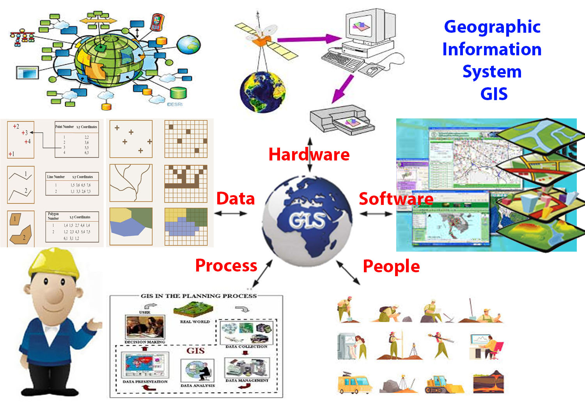

GEO-MASTER
مدخل إلى GIS الجيولوجي
ما هو GIS؟
نظم المعلومات الجغرافية (GIS) هي تقنية قوية تسمح بجمع وتخزين وتحليل وإدارة وعرض جميع أنواع البيانات المكانية (البيانات المرتبطة بموقع على سطح الأرض). إنها أداة حاسمة لفهم العلاقات والأنماط والاتجاهات الجغرافية.
في جوهرها، يربط GIS البيانات بالخرائط، مما يحول المعلومات المعقدة إلى رؤى بصرية سهلة الفهم. تخيل طبقات شفافة من المعلومات فوق بعضها البعض لتكوين صورة شاملة.
GIS في الجيولوجيا
يعد GIS أداة لا غنى عنها في مجال الجيولوجيا. يمكّن الجيولوجيين من دمج وتحليل البيانات الجيولوجية المتنوعة مثل الخرائط الطبوغرافية، خرائط الصدوع، البيانات الزلزالية، نتائج الحفر، وتحليلات التربة، كل ذلك في بيئة مكانية واحدة.
بعض التطبيقات الرئيسية لـ GIS في الجيولوجيا تشمل:
- رسم الخرائط الجيولوجية: إنشاء خرائط تفصيلية للتكوينات الصخرية والصدوع والطيات.
- تحليل الهيدروجيولوجيا: تتبع حركة المياه الجوفية وتحديد مناطق التلوث.
- استكشاف الموارد: تحديد المواقع المحتملة للمعادن والنفط والغاز.
- تقييم المخاطر الجيولوجية: نمذجة الانهيارات الأرضية والزلازل والبراكين.
- نمذجة التضاريس ثلاثية الأبعاد: فهم التراكيب الجيولوجية تحت السطح.
مكونات نظام GIS
يتكون نظام GIS عادةً من خمسة مكونات رئيسية:
- الأجهزة (Hardware): أجهزة الكمبيوتر والخوادم التي تقوم بتشغيل النظام.
- البرمجيات (Software): برامج مثل ArcGIS, QGIS, Google Earth Pro.
- البيانات (Data): أهم مكون، يشمل البيانات المكانية والوصفية.
- الأشخاص (People): المستخدمون الذين يقومون بإدارة وتخطيط واستخدام النظام.
- الأساليب (Methods): الإجراءات والتقنيات المتبعة لتطبيق GIS.
صور لمكونات GIS الجيولوجي
مثال تفاعلي (محاكاة)
تخيل كيف يمكن لـ GIS أن يدمج بيانات متعددة لتكوين رؤى جديدة:
هذه المحاكاة البسيطة توضح كيف يمكن لطبقات مختلفة من البيانات الجيولوجية (مثل التضاريس والصدوع) أن تُعرض معًا لتحليل العلاقات المكانية.